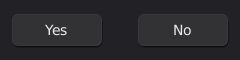
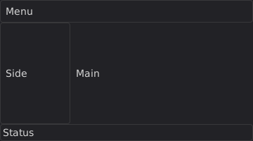
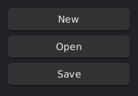
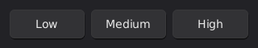
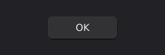
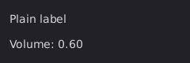
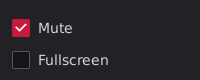
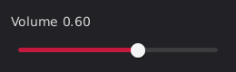

<TODO: >
r_ui_list* r_create_ui_list(r_context* c, uint64_t target, uint64_t root_id, int width, int height); r_ui_list* r_create_ui_list_ex(r_context* c, uint64_t target, uint64_t root_id, int width, int height, int max_drawables, int max_interactables);
Creates a new UI list, it continues to exist until deleted by r_delete_ui_list.
UI lists store everything in rcut, in particular r_interactables and r_drawables.
Each UI list can be cleared and regenerated independently of each other.
target is a opaque target ID, usually referring to a window or render target. All coordinates are within that targets space.
See <TODO: rcut_SDL targets>.
r_create_ui_list_ex takes explicit capacities instead of RCUT_LIST_MAX_ELEMENTS.
r_ui_list* l = r_create_ui_list_ex(&f->context, 0, 100, 320, 80, 16, 4); r_label(l, l->root_area, "Hello from a second list");
See also: r_delete_ui_list, r_popup, r_viewport, r_scroll_begin
void r_destroy_ui_list(r_ui_list* list);
<TODO: >
| Parameter | |
|---|---|
list | <TODO: > |
r_ui_list* dialog = r_sdl_dialog(f, 200, 320, 160, "Settings"); if(r_sdl_close_requested(f, dialog, true)) r_destroy_ui_list(dialog);
See also: r_create_ui_list, r_list_set_visibility
void r_list_clear(r_ui_list* list);
<TODO: >
if(ui->resized) { r_list_clear(ui); r_button(ui, r_shrink(ui->root_area, 16), "Rebuilt"); }
void r_list_set_visibility(r_ui_list* list, bool visible);
<TODO: >
struct r_ui_list { r_context* context; // context = NULL indicates a free slot. void* userptr; // If non-zero this list is treated like a popup: it uses the coordinate system and event loop of the parent, but is rendered to it's own target. struct r_ui_list* ephemeral_parent; // Single linked list for iteration. // [List Idx 0][Child of List Idx 0][Child of Child of List Idx 0][List Idx 1][List Idx 2] struct r_ui_list* chain_prev; struct r_ui_list* chain_next; int generation; int parent_generation; // Compared to ephemeral_parent->generation to recognize when the parent is deleted. char* title; uint64_t target; // Usually it refers to a window, but can also be a render target or similar. Can be a simple index, or a pointer, or a handle depending on frontend. bool is_ephemeral:1; // Ephemeral lists are deleted if they weren't recreated/kept alive during a rebuild. bool is_masked:1; // Wheter to apply the root_area as scissor during rendering. bool is_hidden:1; // Can be used by tabs and popups. bool block_event_fallthrough:1; // If false, events get "bubbled up" to other r_ui_lists with the same target. bool block_accelerator_mode:1; // If true, Alt will not enter accelerator mode while focus is inside this UI list. bool needs_redraw:1; bool resized:1; // Set when the root_area of a root list changed size, cleared by r_list_clear. bool needs_ephemeral_sweep:1; // Is set to true when a ephemeral was marked to be deleted. This allows cleaning up ephemeral lists without regular list rebuilds. bool is_marked_as_unused:1; bool is_marked_as_to_delete:1; bool is_modal:1; bool is_viewport:1; bool is_tooltip:1; bool has_scrollbar:1; bool close_on_outside_click:1; bool use_transform_matrix:1; float content_transform[2][3]; float scroll_x, scroll_y; // Area that is representitive of what space this UI list visually fills. Viewports get masked to this area. The X/Y coordinate is 0, 0 for windows as it's relative to their own coordinate system. rect root_area; // Determines min/max for scrollable viewports. rect document_area; uint64_t anchor_id; //rect global_mapping; // Where the ui_list is being displayed in global screen coordinates. int frame_parity; uint32_t build_count; r_paged_buffer draw_buffers[2]; r_drawable* draw_items; r_drawable* draw_items_last_frame; int count_draw_items; int count_draw_items_last_frame; r_paged_buffer interact_buffers[2]; r_interact* interact_items; r_interact* interact_items_last_frame; int count_interact_items; int count_interact_last_frame; r_paged_buffer storage_buffers[2]; uint8_t* storage_buffer; uint8_t* storage_buffer_last_frame; int storage_buffer_cur_tail; int storage_buffer_last_tail; r_hashmap id_hash[2]; rect drawn_area; uint64_t drawn_target; rect damage; };
<TODO: >
See also: r_create_ui_list, r_list_clear
#define RCUT_LIST_MAX_ELEMENTS 4096 // ~4 millionths of address space per r_ui_list #define RCUT_LIST_MAX_ELEMENTS 65535 // ~1 billionths of address space per r_ui_list
<TODO: >
<TODO: >
typedef struct rect { int x, y, w, h; uint64_t id; } rect;
<TODO: >
rect r_salt(rect r, uint64_t salt);
<TODO: >
rect area = r_shrink(ui->root_area, 12); rect size = { .w = 90, .h = 32 }; rect yes = r_aligned(R_LEFT_CENTER, area, r_salt(size, R_SALT00)); rect no = r_aligned(R_RIGHT_CENTER, area, r_salt(size, R_SALT01)); r_button(ui, yes, "Yes"); r_button(ui, no, "No");

See also: r_cut_px
rect r_cut_px(r_alignment dir, rect* to_cut, int pixels, uint64_t salt);
<TODO: >
| Parameter | |
|---|---|
dir | <TODO: > |
to_cut | <TODO: > |
salt | <TODO: > |
rect main = ui->root_area; rect menu = r_cut_px(R_TOP, &main, 32, R_SALT00); rect status = r_cut_px(R_BOTTOM, &main, 24, R_SALT01); rect side = r_cut_px(R_LEFT, &main, 100, R_SALT02); r_panel(ui, menu, R_STYLE_PANEL); r_panel(ui, status, R_STYLE_PANEL); r_panel(ui, side, R_STYLE_PANEL); r_label(ui, r_shrink(menu, 8), "Menu"); r_label(ui, r_shrink(status, 4), "Status"); r_label(ui, r_shrink(side, 8), "Side"); r_label(ui, r_shrink(main, 8), "Main");

<TODO: >
typedef enum { R_BOTTOM = (1 << 0), R_V_CENTER = (1 << 1), R_TOP = (1 << 2), R_LEFT = (1 << 3), R_H_CENTER = (1 << 4), R_RIGHT = (1 << 5), // R_TOP_LEFT = R_TOP | R_LEFT, R_BOTTOM_LEFT = R_BOTTOM | R_LEFT, R_TOP_RIGHT = R_TOP | R_RIGHT, R_BOTTOM_RIGHT = R_BOTTOM | R_RIGHT, R_TOP_CENTER = R_TOP | R_H_CENTER, R_BOTTOM_CENTER = R_BOTTOM | R_H_CENTER, R_LEFT_CENTER = R_LEFT | R_V_CENTER, R_RIGHT_CENTER = R_RIGHT | R_V_CENTER, R_CENTER = R_H_CENTER | R_V_CENTER, } r_alignment;
<TODO: >
<TODO: >
typedef struct r_layout_iter { r_ui_list* l; rect start; rect area; r_alignment dir; int size; int spacing; int count; r_drawable* bg; int style; int line_h; int line_first; } r_layout_iter;
<TODO: >
r_layout_iter r_stack(r_ui_list* l, rect area, r_alignment dir);
<TODO: >
r_layout_iter it = r_stack(ui, r_shrink(ui->root_area, 12), R_TOP); r_button(ui, r_next(&it, -1), "New"); r_button(ui, r_next(&it, -1), "Open"); r_button(ui, r_next(&it, -1), "Save");

See also: r_next, r_remaining
rect r_next(r_layout_iter* s, int size); rect r_next_fraction(r_layout_iter* s, float fraction); rect r_next_fit(r_layout_iter* s, int style, const char* text); rect r_next_fit_ex(r_layout_iter* s, int style, int icon, const char* text); rect r_next_keyed(r_layout_iter* s, int size, uint64_t key);
<TODO: >
r_layout_iter cols = r_stack(ui, r_shrink(ui->root_area, 12), R_LEFT); for(int i = 0; i < 3; i++) r_button(ui, r_next_fraction(&cols, 1.0f / (3 - i)), (char*[]){ "Low", "Medium", "High" }[i]);

<TODO: >
rect r_remaining(r_layout_iter* s);
<TODO: >
<TODO: >
void r_button(r_ui_list* l, rect r, const char* text); r_drawable* r_button_ex(r_ui_list* l, rect r, int style, int icon, const char* text);
<TODO: >
rect ok = r_aligned(R_CENTER, ui->root_area, (rect){ .w = 100, .h = 32 }); r_button(ui, ok, "OK"); r_on_click(ui, ok, on_ok);

void r_label(r_ui_list* l, rect r, const char* text); r_drawable* r_label_ex(r_ui_list* l, rect r, int style, int icon, const char* text); void r_label_value(r_ui_list* l, rect r, const char* fmt, r_data_binding binding);
<TODO: >
r_layout_iter it = r_stack(ui, r_shrink(ui->root_area, 12), R_TOP); r_label(ui, r_next(&it, 24), "Plain label"); r_label_value(ui, r_next(&it, 24), "Volume: %.2f", R_PTR(&volume));

See also: r_paragraph, r_header
void r_on_click(r_ui_list* l, rect r, void (*on_click)(void)); void r_on_click_i32(r_ui_list* l, rect r, void (*on_click)(int32_t), int32_t value); void r_on_click_u64(r_ui_list* l, rect r, void (*on_click)(uint64_t), uint64_t value); void r_on_click_f32(r_ui_list* l, rect r, void (*on_click)(float), float value); void r_on_click_f64(r_ui_list* l, rect r, void (*on_click)(double), double value); void r_on_click_ptr(r_ui_list* l, rect r, void (*on_click)(void*), void* value); void r_on_click_ptr_i32(r_ui_list* l, rect r, void (*on_click)(void*, int32_t), void* ptr, int index);
<TODO: >
r_layout_iter it = r_stack(ui, ui->root_area, R_TOP); for(int i = 0; i < 4; i++) { rect r = r_next(&it, -1); r_button(ui, r, "Item"); r_on_click_i32(ui, r, on_select, i); }
void r_checkbox(r_ui_list* l, rect r, const char* text, r_data_binding binding);
<TODO: >
| Parameter | |
|---|---|
binding | <TODO: > |
r_layout_iter it = r_stack(ui, r_shrink(ui->root_area, 12), R_TOP); r_checkbox(ui, r_next(&it, -1), "Mute", R_PTR(&mute)); r_checkbox(ui, r_next(&it, -1), "Fullscreen", R_PTR(&fullscreen));

void r_slider_h(r_ui_list* l, rect r, float min, float max, float step, r_data_binding binding);
<TODO: >
r_layout_iter it = r_stack(ui, r_shrink(ui->root_area, 12), R_TOP); r_label_value(ui, r_next(&it, 24), "Volume %.2f", R_PTR(&volume)); r_slider_h(ui, r_next(&it, 24), 0, 1, 0.05f, R_PTR(&volume));

See also: r_slider_box, r_spinbox
enum r_style { R_STYLE_FALLBACK = 0, // If the style doesn't know how to draw something, it should fallback to drawing this instead. R_STYLE_WINDOW, R_STYLE_TOOLTIP, R_STYLE_BUTTON, R_STYLE_HEADER, R_STYLE_LABEL, R_STYLE_ICON, R_STYLE_TEXT, R_STYLE_INPUT, // Text areas with various misc functionalities R_STYLE_MENU_BG, R_STYLE_MENU_ITEM, R_STYLE_CONTEXT_MENU_BG, R_STYLE_CONTEXT_MENU_ITEM, R_STYLE_PANEL, R_STYLE_CHECKBOX, R_STYLE_RADIO, R_STYLE_TOGGLE, R_STYLE_SLIDEBOX, // Mix between slider and input box, with both numerical and drag input. R_STYLE_SLIDER, R_STYLE_SCROLLBAR, R_STYLE_MENUBAR_BG, R_STYLE_MENUBAR_ITEM, R_STYLE_INPUT_LINE_EDIT, R_STYLE_INPUT_MULTILINE_EDIT, R_STYLE_PROGRESS, R_STYLE_TAB, R_STYLE_TAB_BAR, R_STYLE_SEPARATOR, R_STYLE_COLLAPSIBLE, // Header of a collapsible section. R_STYLE_LIST_ITEM, // Selectable item in a list. R_STYLE_DROPDOWN, // Button that opens a selection popup. R_STYLE_SPINBOX, R_STYLE_BACKDROP, // Fills a window behind something modal. Unused since dialogs are root lists of their own. R_STYLE_DIALOG, R_STYLE_TAB_PAGE, // Background of the content below tabs. R_STYLE_SEGMENTED, // Joined choices, one is selected. R_STYLE_BASE_MASK = 0xFF, R_STATE_SELECTED = R_BIT(0) << 8, // Selection in a menu. R_STATE_PRESSED = R_BIT(1) << 8, R_STATE_HOVER = R_BIT(2) << 8, R_STATE_DISABLED = R_BIT(3) << 8, R_STATE_TOGGLED = R_BIT(4) << 8, R_STATE_FOCUS = R_BIT(5) << 8, // Up to R_BIT(15) << 8 R_STATE_MASK = 0xFFFF << 8, R_VARIANT_FLAT = 0 << 24, // Usually means without border and the element is just implied through icon + label R_VARIANT_RAISED = 1 << 24, // Raised panel, by default panels are inset. R_VARIANT_HORZ = 2 << 24, // Horizontal scrollbar/slider R_VARIANT_VERT = 3 << 24, // Vertical scrollbar/slider R_VARIANT_BOLD = 4 << 24, // Primary button - More colorful R_VARIANT_DULL = 5 << 24, // Tertiary button - Less color, flatter R_VARIANT_LISTITEM = 6 << 24, // UI element is part of a list, that usually implies having the same background as the list and a flat appearance. R_VARIANT_MASK = 0xF << 24, R_COMPONENT_JOINED = 1 << 28, // Part of an complex input, wedged inbetween endcaps. R_COMPONENT_ENDCAP_START = 2 << 28, // For example to create a text input with a popup selection then we have: R_COMPONENT_ENDCAP_END = 3 << 28, // [R_STYLE_INPUT | R_COMPONENT_ENDCAP_START][R_STYLE_BUTTON | R_COMPONENT_ENDCAP_END] R_COMPONENT_TRACK = 4 << 28, // Primary background for progress bars/sliders/scroll bar, behind joined components (with the style of the joined parts). R_COMPONENT_FILL = 5 << 28, // Alternative background for progress bars that indicate the progress. R_COMPONENT_THUMB = 6 << 28, // Draggable portion of slider/scroll bar. R_COMPONENT_CARET = 7 << 28, // Text cursor, blinks while focused. R_COMPONENT_SELECTION = 8 << 28, // Text selection highlight. R_COMPONENT_MASK = 0xF << 28, };
<TODO: >
<TODO: >
typedef struct { bool use_function_indirection; union{ struct{ r_data_type ptr_type; void* ptr; int num_bits; int bit_offset; }; struct{ r_fn* getter; r_fn* setter; r_signature setter_sig; r_signature getter_sig; uint64_t index; void* pointer; }; }; } r_data_binding;
<TODO: >
#define R_PTR(P) ((r_data_binding){ \ .ptr = (void*)(P), \ .num_bits = (int)(sizeof(*(P)) * 8), \ .ptr_type = R_TYPEOF(*(P)) })
<TODO: >
r_checkbox(ui, ui->root_area, "Mute", R_PTR(&mute));